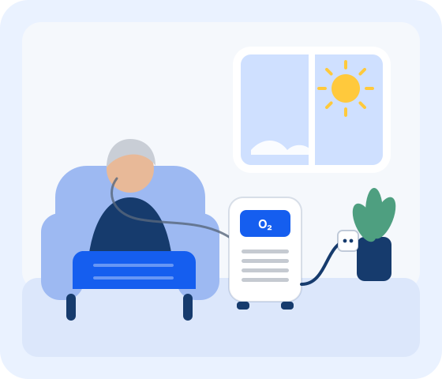
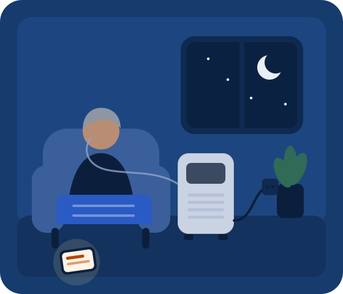

Cuidado domiciliar conectado
Quando a energia acaba, o cuidado precisa continuar.
O LuzVital conecta tecnologia e cuidado para ajudar a proteger pessoas que dependem de equipamentos médicos elétricos em casa.
Quando falta energia num bairro, a plataforma identifica quem pode ter sido afetado e avisa a rede de apoio de cada paciente: família, cuidadores e equipe de saúde.
- Não substitui o SAMU 192
- Demonstração com dados fictícios


O problema
Para algumas pessoas, ficar sem energia é muito mais do que um transtorno.
Há pacientes que dependem de aparelhos ligados na tomada para respirar, se alimentar ou ser monitorados em casa. Quando a luz cai, cada minuto conta, e a família nem sempre fica sabendo a tempo.
-
Aparelhos que não podem parar
Concentradores de oxigênio, ventiladores e bombas de alimentação dependem de energia elétrica.
-
Reserva com tempo contado
Baterias e cilindros duram algumas horas. Faltas de energia podem durar bem mais.
-
Ninguém sabe quem já está indo
Família, cuidadores e equipe de saúde se avisam por mensagens soltas e perdem tempo.
3,1 milhões de unidades consumidoras ficaram sem energia num único dia na Grande São Paulo, depois do temporal de outubro de 2024. Fonte: eixos (abre em nova aba)
O que é o LuzVital
Tecnologia que conecta informação, pessoas e cuidado.
O LuzVital organiza o que importa numa falta de energia: quem é o paciente, de quais aparelhos ele depende, quanto tempo a reserva aguenta e quem deve ser avisado.
Cadastro de pacientes
Dados essenciais e endereço com região, para saber quem está em cada bairro.
Equipamentos médicos
Quais aparelhos o paciente usa e quanto tempo a bateria de cada um dura.
Interrupções de energia
Registro de faltas de energia por região. Nesta versão, registradas à mão ou simuladas.
Quem pode ser afetado
O sistema cruza a região da ocorrência com os pacientes cadastrados ali.
Rede de apoio avisada
Alertas para família, cuidadores e equipe, na ordem de acionamento combinada.
Acompanhamento
Quem confirmou, quem ainda não respondeu e o que foi feito depois do alerta.
Como funciona
Como o LuzVital funciona na prática?
Cinco etapas, do cadastro ao acompanhamento.
-
Etapa 1: Cadastro
Paciente, equipamentos, autonomia da bateria, contatos e região ficam registrados.
-
Etapa 2: Monitoramento
Uma interrupção de energia é informada para uma região. Hoje, de forma manual ou simulada.
-
Etapa 3: Identificação
A plataforma encontra os pacientes ativos daquela região e ordena quem precisa de atenção primeiro.
-
Etapa 4: Alertas
Cada contato de apoio recebe um alerta, na ordem de acionamento definida.
-
Etapa 5: Acompanhamento
Quem pode ajudar confirma com um toque. Todos veem quem já assumiu e o que foi feito.
A ordem de prioridade é uma regra operacional baseada na autonomia dos aparelhos e na duração estimada da falta de energia. Ela não é uma avaliação clínica.
Demonstração
Veja o LuzVital em ação.
Simule uma falta de energia num bairro e acompanhe, passo a passo, o que a central veria.
Simulação com dados fictícios. Nada aqui é monitoramento real: nenhuma mensagem é enviada, não há integração com a distribuidora de energia e os números não são indicadores de desempenho.
Jardim Ângela, São Paulo exemplo
Energia normal na região
14h00 horário simulado
- Pacientes cadastrados
- 5
- Potencialmente afetados
- 0
- Alertas emitidos
- 0
- Confirmados
- 0
- Ocorrência
- Identificação
- Alertas
- Acompanhamento
Tudo normal por aqui.
Clique em “Simular interrupção de energia” para começar.
Pacientes da região, por prioridade
Prioridade por regra operacional, não é avaliação clínica. Em emergência médica, ligue para o SAMU 192.
Linha do tempo
Para quem é
Feito para toda a rede de cuidado.
Cada pessoa tem um papel. O LuzVital ajuda todas a saber o que está acontecendo.
-
Pacientes eletrodependentes
Não precisam operar nada. O aviso vai para quem pode ajudar.
-
Familiares e responsáveis
Ficam sabendo da falta de energia e podem avisar, com um toque, que estão indo.
-
Cuidadores
Veem quanto tempo a reserva de cada aparelho aguenta e quem já foi avisado.
-
Equipes de home care
Cadastram pacientes e aparelhos e acompanham os alertas de todos numa tela.
-
Profissionais de acompanhamento
Têm o histórico do que foi feito em cada ocorrência, para apoiar decisões.
O LuzVital organiza informação e comunicação. Ele não garante atendimento, não faz diagnóstico e não substitui serviços de saúde ou de emergência.
Privacidade e segurança
Dados de saúde pedem cuidado redobrado.
Informações sobre a saúde e o endereço de uma pessoa são sensíveis. Por isso, o projeto segue estes princípios desde o início.
Só o necessário
Guardamos apenas o que ajuda a agir numa falta de energia. Nada de prontuário ou CPF.
Controle de acesso
Login e perfis de acesso estão planejados para a próxima versão.
Uso responsável
Os dados servem só para avisar a rede de apoio do próprio paciente.
Privacidade na demonstração
Todos os dados são fictícios e nada é salvo no seu navegador.
LGPD como referência
A Lei Geral de Proteção de Dados orienta o projeto. Esta versão acadêmica não tem certificação formal.
Dúvidas
Perguntas frequentes
Respostas diretas sobre o que o LuzVital faz hoje e o que ainda é plano.
É uma plataforma que cruza faltas de energia com os pacientes eletrodependentes cadastrados na região e avisa a rede de apoio de cada um. É um projeto acadêmico da FIAP, desenvolvido na Global Solution 2026.
Equipes de home care, que cadastram os pacientes, e os contatos de apoio: familiares, cuidadores e profissionais de saúde. O paciente não precisa usar o sistema.
Não. O LuzVital avisa a rede de apoio, mas não envia ambulâncias nem faz triagem. Em emergência médica, ligue para o SAMU 192.
Nesta versão, a interrupção é registrada por um operador ou simulada para testes. A identificação automática depende das fontes de dados e da infraestrutura de monitoramento disponíveis, e ainda não está implementada.
Ainda não. Um pequeno dispositivo na tomada que avisa quando a energia some é uma possibilidade futura. Ele exigiria avaliação elétrica, testes de segurança e uma forma de comunicação que funcione sem o Wi-Fi da casa.
O projeto guarda o mínimo necessário e usa somente dados fictícios nesta fase. Login e perfis de acesso estão planejados para a próxima versão, antes de qualquer uso com pessoas reais.
Não. Essa integração depende de um acordo formal com a distribuidora. Por enquanto, as interrupções são informadas manualmente ou simuladas.
A energia pode acabar. O cuidado não.
Conheça uma proposta de tecnologia desenvolvida para conectar pessoas, informação e apoio em momentos em que cada minuto pode importar.